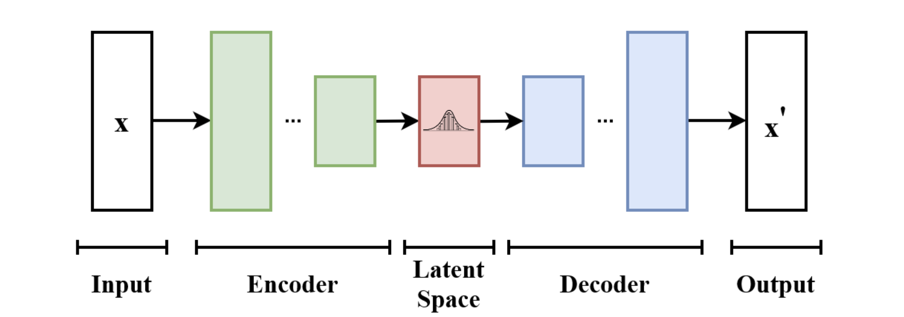
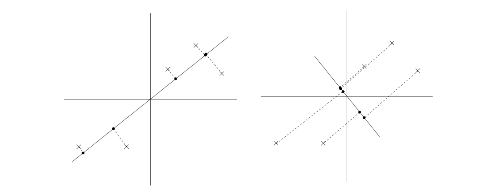

1. Introduction
- 본 포스트에서는 비지도 학습(Unsupervised Learning)의 핵심적인 두 가지 방법론인 Variational Auto-Encoder (VAE)와 Principal Components Analysis (PCA)에 대해 다룹니다. VAE는 고차원의 연속형 잠재 변수(Latent Variable)를 비선형 모델인 신경망을 통해 학습할 수 있도록 EM(Expectation-Maximization) 알고리즘을 확장한 생성 모델입니다. 반면 PCA는 데이터의 차원을 축소하고 중복성을 제거하기 위해 널리 사용되는 선형 변환 기법입니다. 두 방법론 모두 데이터의 숨겨진 구조(Latent Space/Subspace)를 찾아낸다는 공통된 철학을 공유합니다.
2. Variational Auto-Encoder (VAE)
2.1. VAE의 구조와 직관
- Variational Auto-Encoder는 기본적으로 입력 데이터를 압축하는 Encoder와 이를 다시 복원하는 Decoder로 구성됩니다.

VAE 모델은 EM 알고리즘의 아이디어를 신경망이라는 강력한 비선형 함수 근사기에 접목한 알고리즘 군을 의미합니다. 고차원의 연속형 잠재 변수를 다루기 위해 VAE는 데이터가 생성되는 확률론적 과정을 모델링합니다.
잠재 변수 \(z\)는 사전 분포인 표준 정규분포를 따른다고 가정합니다: \(z\sim\mathcal{N}(0,I_{k\times k})\).
데이터 \(x\)는 주어진 잠재 변수 \(z\)에 대해 신경망(Decoder) \(g(z;\theta)\)에 의해 파라미터화된 정규분포에서 생성됩니다: \(x|z\sim\mathcal{N}(g(z;\theta),\sigma^{2}I_{d\times d})\) (여기서 \(\sigma\)는 알려진 스칼라 값입니다).
기존의 단순한 혼합 모델에서는 잠재 변수의 사후 분포(Posterior)인 \(p(z|x;\theta)\)를 해석적으로(Analytically) 계산할 수 있었으나, VAE처럼 복잡한 비선형 신경망 \(g(z;\theta)\)가 도입되면 정확한 사후 분포를 직접 계산하는 것(Intractable)이 불가능해집니다.
2.2. ELBO (Evidence Lower Bound) 최적화
진짜 사후 분포 \(p(z|x;\theta)\)를 구하기 어렵기 때문에, 우리는 이를 근사하는 다루기 쉬운 분포족(Family of distributions) \(\mathbb{Q}\)에서 최적의 분포 \(Q\)를 찾는 변분 추론(Variational Inference) 접근을 취합니다.
이를 위해 목적 함수인 ELBO(Evidence Lower Bound)를 정의하며, 우리는 이 ELBO를 최대화하는 방향으로 모델을 학습시킵니다. 단일 관측치 \(x^{(i)}\)에 대한 ELBO는 다음과 같이 주어집니다:
\[ELBO(Q,\theta)=\sum_{i=1}^{n}\mathbb{E}_{z^{(i)}\sim Q_{i}}\left[\log\frac{p(x^{(i)},z^{(i)};\theta)}{Q_{i}(z^{(i)})}\right]\]
연속형 잠재 변수 \(z\in\mathbb{R}^{k}\)를 다룰 때, \(Q_i\)는 데이터 \(x^{(i)}\)에 종속적인 평균과 분산을 가지는 정규분포로 가정합니다.
즉, 신경망 \(q(\cdot;\phi)\)와 \(v(\cdot;\psi)\)를 사용하여 분포의 파라미터를 추정합니다. \[Q_{i}=\mathcal{N}(q(x^{(i)};\phi), \text{diag}(v(x^{(i)};\psi))^{2})\]
여기서 함수 \(q, v\)가 바로 Encoder 역할을 수행하여 데이터를 잠재 공간(Latent code)으로 매핑하며, \(g(z;\theta)\)는 Decoder 역할을 합니다.
\(Q_i\)가 정규분포이므로 확률 밀도를 효율적으로 계산하고 샘플링을 진행하여 기댓값 \(\mathbb{E}_{z^{(i)}\sim Q_{i}}\)을 추정할 수 있습니다.
2.3. 재매개변수화 트릭 (Re-Parameterization Trick)
- 모델을 학습하기 위해 파라미터 \(\theta, \phi, \psi\)에 대해 경사상승법(Gradient Ascent)을 수행해야 합니다.
- Decoder 파라미터 \(\theta\)에 대한 기울기 계산은 직관적이지만, Encoder 파라미터 \(\phi, \psi\)에 대한 기울기 계산은 매우 까다롭습니다. 왜냐하면 기댓값을 취하는 확률 분포 \(Q_i\) 자체가 최적화해야 할 파라미터 \(\phi, \psi\)에 의존하기 때문입니다. 즉, 다음과 같이 기울기와 기댓값의 순서를 단순히 바꿀 수 없습니다.
\[\nabla\mathbb{E}_{z\sim Q_{\phi}}[f(\phi)]\ne\mathbb{E}_{z\sim Q_{\phi}}[\nabla f(\phi)]\]
이 문제를 해결하기 위해 재매개변수화 트릭(Re-Parameterization Trick)을 도입합니다.
확률 변수 \(x\sim\mathcal{N}(\mu,\sigma^{2})\)에서 직접 샘플링하는 것은 \(x=\mu+\epsilon\sigma\) (\(\epsilon\sim\mathcal{N}(0,1)\)) 형태로 식을 변형하여 독립적인 노이즈 \(\epsilon\)을 먼저 샘플링한 후 결정론적(Deterministic)으로 변환하는 것과 수학적으로 동치입니다.
이 아이디어를 잠재 변수 \(z^{(i)}\)에 적용하면 다음과 같이 표현할 수 있습니다: \[z^{(i)}=q(x^{(i)};\phi)+v(x^{(i)};\psi)\odot\xi^{(i)} \quad \text{where } \xi^{(i)}\sim\mathcal{N}(0,I_{k\times k})\]
- 단, \(\odot\)는 동일한 차원의 두 벡터 간의 원소별 곱(Element-wise product)을 의미합니다.
이 트릭을 사용하면, 적분(기댓값)의 대상이 되는 확률 분포가 더 이상 모델 파라미터에 의존하지 않는 고정된 노이즈 분포 \(\mathcal{N}(0, 1)\)가 됩니다. 따라서 ELBO 수식 내에서 미분 연산자 \(\nabla_{\phi}\)를 기댓값 내부로 안전하게 밀어 넣을 수 있습니다.
\[\nabla_{\phi}\mathbb{E}_{z^{(i)}\sim Q_{i}}\left[\log\frac{p(x^{(i)},z^{(i)};\theta)}{Q_{i}(z^{(i)})}\right] = \mathbb{E}_{\xi^{(i)}\sim\mathcal{N}(0,1)}\left[\nabla_{\phi}\log\frac{p(x^{(i)},z^{(i)};\theta)}{Q_{i}(z^{(i)})}\right]\]
- 이제 우리는 여러 개의 \(\xi^{(i)}\)를 샘플링하는 몬테카를로 방식을 통해 기댓값과 기울기를 효율적으로 추정할 수 있게 되었으며, 신경망 역전파(Backpropagation)를 완벽하게 적용할 수 있습니다.
3. Principal Components Analysis (PCA)
3.1. 차원 축소의 동기 (Motivation)
- 자동차 데이터셋이 있다고 가정해 봅시다. 이 데이터에는 자동차의 ‘최고 속도’와 ’회전 반경’ 같은 수많은 속성(Feature) \(x^{(i)}\)가 포함되어 있습니다.
- 만약 \(x_i\)는 ‘km/h’ 단위로 측정된 최고 속도이고, \(x_j\)는 ‘miles/h’ 단위로 측정된 최고 속도라면, 두 변수는 사실상 완전히 선형 종속적입니다. 즉, 겉보기에는 차원이 높아 보이지만 데이터는 사실상 더 낮은 \(n-1\) 차원의 부분 공간(Subspace)에 놓여 있습니다. PCA는 이러한 데이터의 중복성(Redundancy)을 자동으로 감지하고 제거하는 알고리즘입니다.
3.2. 데이터 전처리 (Preprocessing)
- PCA를 수행하기 전, 모든 특성(Feature)이 동일한 척도를 갖도록 정규화(Normalization)하는 과정이 필요합니다.
- 각 특성의 평균이 0, 분산이 1이 되도록 다음과 같이 변환합니다.
\[x_{j}^{(i)}\leftarrow\frac{x_{j}^{(i)}-\mu_{j}}{\sigma_{j}}\] \[\mu_{j}=\frac{1}{n}\sum_{i=1}^{n}x_{j}^{(i)}, \quad \sigma_{j}^{2}=\frac{1}{n}\sum_{i=1}^{n}(x_{j}^{(i)}-\mu_{j})^{2}\]
- 만약 모든 특성이 이미 동일한 스케일(Scale)을 가지고 있다는 사전 지식이 있다면 이 과정은 생략될 수 있습니다.
3.3. 주요 변동 축 (Major Axis of Variation) 찾기
- 데이터가 가장 넓게 퍼져 있는, 즉 데이터가 근사적으로 놓여 있는 주요 방향 벡터 \(u\)를 어떻게 찾을 수 있을까요?

- 데이터 포인트 \(x^{(i)}\)를 단위 벡터 \(u\) 위로 투영(Projection)했을 때의 길이는 내적 연산인 \(x^{(i)\top}u\) 로 주어집니다.
- PCA의 목적은 투영된 데이터의 분산이 최대화되는 단위 벡터 \(u\)를 찾는 것입니다. 수식으로 표현하면 다음과 같습니다:
\[\max_{||u||_{2}=1} \frac{1}{n}\sum_{i=1}^{n}(x^{(i)\top}u)^{2} = \max_{||u||_{2}=1} u^{\top}\left(\frac{1}{n}\sum_{i=1}^{n}x^{(i)}x^{(i)\top}\right)u\]
- 괄호 안의 식 \(\frac{1}{n}\sum_{i=1}^{n}x^{(i)}x^{(i)\top}\)은 (평균이 0으로 맞춰진) 데이터의 경험적 공분산 행렬(Empirical Covariance Matrix) \(\Sigma\)입니다.
- 제약 조건 \(||u||_{2}=1\) 하에서 위 이차형식(Quadratic form)을 최대화하는 벡터 \(u\)는 바로 공분산 행렬 \(\Sigma\)의 가장 큰 고윳값을 가지는 주요 고유벡터(Principal Eigenvector)가 됩니다 (\(\Sigma e=\lambda e\)).
3.4. k-차원 공간으로의 축소
데이터를 단일 축이 아닌 \(k\)차원의 부분 공간(\(k < d\))으로 투영하고자 할 경우, 공분산 행렬 \(\Sigma\)에서 가장 큰 고윳값을 가지는 상위 \(k\)개의 고유벡터 \(u_1, \dots, u_k\)를 선택하면 됩니다. 이 고유벡터들은 데이터에 대한 새로운 직교 기저(Orthogonal basis)를 형성합니다.
원본 데이터 \(x^{(i)}\)를 이 새로운 \(k\)차원 기저 상의 좌표 \(y^{(i)}\)로 변환하는 공식은 다음과 같습니다:
\[y^{(i)}=\begin{bmatrix} u_{1}^{\top}x^{(i)}\\ u_{2}^{\top}x^{(i)}\\ \vdots\\ u_{k}^{\top}x^{(i)} \end{bmatrix} \in\mathbb{R}^{k}\]
- 이 벡터 \(y^{(i)}\)가 고차원 데이터 \(x^{(i)}\)에 대한 더 낮은 \(k\)차원 근사치를 제공하게 되며, 이때 투영 벡터 \(u_1, \dots, u_k\)를 데이터의 첫 \(k\)개의 주성분(Principal Components)이라고 부릅니다.
3.5. PCA의 주요 활용처
- 데이터 압축 (Compression): 고차원의 \(x^{(i)}\)를 저차원 \(y^{(i)}\)로 표현하여 저장 공간과 계산량을 줄입니다.
- 지도 학습 전처리 (Preprocessing): 학습 알고리즘을 돌리기 전 차원을 줄여 과적합(Overfitting)을 방지하는 효과가 있습니다.
- 노이즈 제거 (Noise Reduction): 안면 인식에 쓰이는 Eigenfaces 기법처럼, 데이터의 진짜 핵심 정보(사람의 얼굴 생김새)는 유지하면서 미세한 조명 변화와 같은 노이즈 성분은 버리는 데 유용합니다.